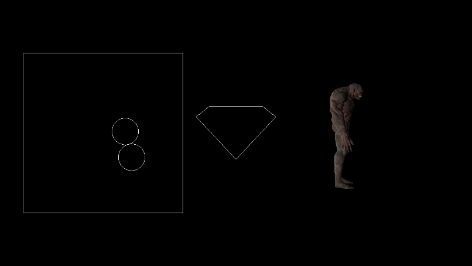

Projects
Metaballs_Multithreaded | Dark Acropolis | Regiment AI | Quadrapedal Character Controller | OpenGL Graphics Engine | Attack on Titan TGTG
OpenGL Graphics Engine
My goal for this project was to make a graphics engine using OpenGl. Originally this was a project that I was making for an assessment while studying at AIE with the goal of rendering a 3D object, but after graduating AIE I continued to improve it so I could use it for possible future projects.
My graphics engine can render multiple 3D objects and 2D Shapes and has different functions for static shapes and dynamic shapes. I have made a very simple shader for the 2D shapes and made a shader for 3D objects that uses phong lighting.


One of the main difficulties working on this project was dealing with all the macros that I had to use for OpenGL, I got around this with ample and efficient commentation to ensure I understood every line and keep everything readable.